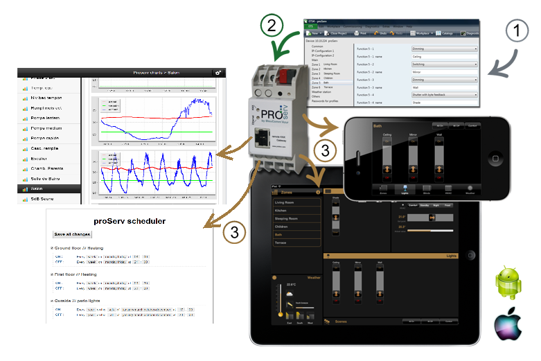

proServX Homepage
Introduction
proServX extends the functionality of the proServ KNX remote controller. proServX provides automatically generated user interface for data presentation, logging capabilities and advanced configuration and automation.
Basic Functions
proServX logViewer standard : show current and historical data charts with:
proServX logViewer classic : show current and historical data charts with:
proServX scheduler : schedule events with:
proServX settings : change settings with:
Expert Functions
proServExpert : expert tool for advanced administration and configuration:
example URL (link) to custom graph:
